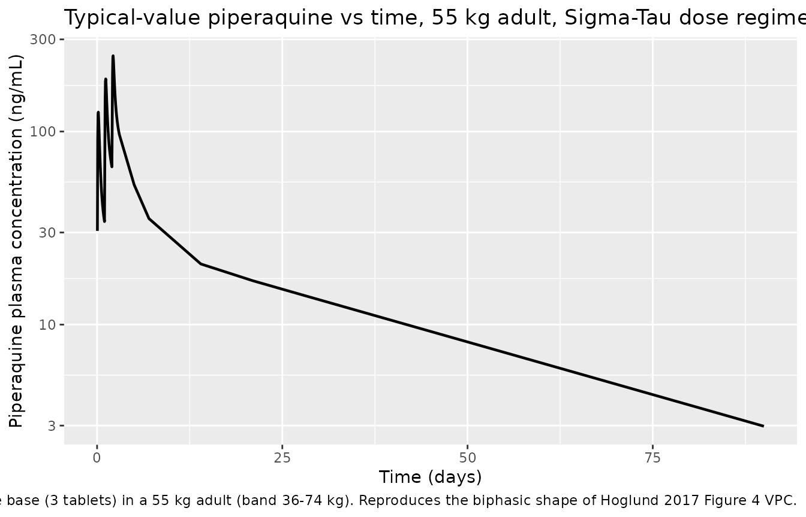
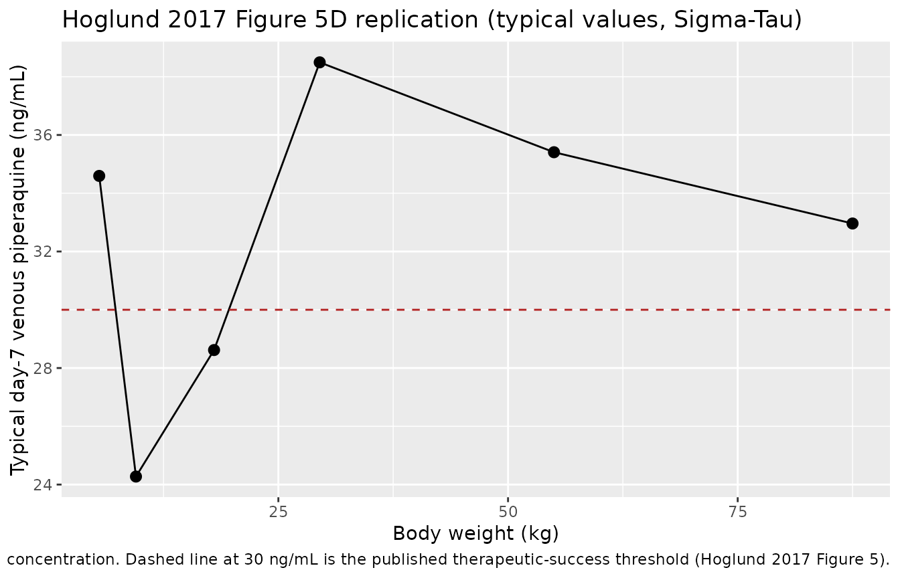

Piperaquine (Hoglund 2017)
Source:vignettes/articles/Hoglund_2017_piperaquine.Rmd
Hoglund_2017_piperaquine.RmdModel and source
- Citation: Hoglund RM, Workman L, Edstein MD, Thanh NX, Quang NN, Zongo I, et al. (2017). Population Pharmacokinetic Properties of Piperaquine in Falciparum Malaria: An Individual Participant Data Meta-Analysis. PLoS Medicine 14(1):e1002212. doi:10.1371/journal.pmed.1002212.
- Article: https://doi.org/10.1371/journal.pmed.1002212
The package model can be loaded with:
mod_fn <- readModelDb("Hoglund_2017_piperaquine")
mod <- rxode2::rxode2(mod_fn())Population
The Hoglund 2017 individual-participant-data meta-analysis pooled 8,776 plasma piperaquine concentrations from 728 adults, children, and healthy volunteers across 11 clinical studies that contributed data to the WorldWide Antimalarial Resistance Network (WWARN) repository. Demographics span body weight 5.1-81 kg and age 0.56-55 years (Table 1). Most pediatric data come from African sites (Burkina Faso, Kenya, Uganda); adult and pregnancy cohorts span Thailand, Sudan, and Viet Nam. The pooled cohort is 43.3% female and 4.9% pregnant (n = 36 pregnant women); 50 healthy volunteers in two studies in Viet Nam contribute the only healthy-volunteer data, of whom 14 received more than one dose. Most paediatric African cohorts measured piperaquine in capillary plasma, while the adult / pregnancy cohorts used venous plasma; the final model estimates a constant 106% offset between matrices (Methods page 5 and Table 3 Scale row).
The same information is available programmatically via the model’s
population metadata
(readModelDb("Hoglund_2017_piperaquine")()$population after
the model is loaded).
Source trace
Every parameter and equation traces back to the Hoglund 2017
publication; the full citation is in the model file’s
reference field. Per-parameter source locations are
recorded inline in
inst/modeldb/specificDrugs/Hoglund_2017_piperaquine.R next
to each ini() entry. The table below collects them in one
place for review.
| Equation / parameter | Value | Source location |
|---|---|---|
lcl = log(55.4) (CL/F, L/h at WT = 54 kg) |
55.4 | Table 3 (RSE 4.22%; 95% CI 51.2-60.6) |
lvc = log(2910) (Vc/F, L at WT = 54 kg) |
2910 | Table 3 (RSE 6.98%; 95% CI 2540-3340) |
lq = log(310) (Q1/F, L/h at WT = 54 kg) |
310 | Table 3 (RSE 8.03%; 95% CI 266-366) |
lvp = log(4910) (Vp1/F, L at WT = 54 kg) |
4910 | Table 3 (RSE 5.85%; 95% CI 4390-5510) |
lq2 = log(105) (Q2/F, L/h at WT = 54 kg) |
105 | Table 3 (RSE 4.98%; 95% CI 95.1-115) |
lvp2 = log(30900) (Vp2/F, L at WT = 54 kg) |
30900 | Table 3 (RSE 4.79%; 95% CI 28300-34200) |
lmtt = log(2.11) (MTT, h) |
2.11 | Table 3 (RSE 4.54%; 95% CI 1.94-2.30) |
lfdepot = fixed(log(1)) (F) |
1 (fixed) | Table 3: ‘F (percent) = 100 fix’ |
e_wt_cl = fixed(0.75) (allometric on CL/Q) |
0.75 (fixed) | Methods page 5: ‘allometric function to all clearance (power of 0.75)’ |
e_wt_vc = fixed(1.00) (allometric on V) |
1.00 (fixed) | Methods page 5: ‘and volume of distribution (power of 1) parameters’ |
mat_mf50 = 0.575 (CL maturation MF50, years) |
0.575 | Table 3 Covariate relationships (RSE 13.6%; 95% CI 0.413-0.711) |
mat_hill = 5.51 (Hill, unitless) |
5.51 | Table 3 (RSE 29.6%; 95% CI 3.22-9.95; upper limit 10) |
e_doseocc_f = 0.237 (per-occasion F increment) |
0.237 | Table 3 ‘Dose F (percent) = 23.7’ (RSE 17.8%; 95% CI 15.8-32.5) |
etalcl ~ 0.074960 (var, log-scale) |
CV 27.9% (IIV) | Table 3 IIV CL (RSE 7.43%); variance = log(0.279^2 + 1) |
etalvc ~ 0.370805 (var, log-scale) |
CV 67.0% (IIV) | Table 3 IIV Vc (RSE 15.5%); variance = log(0.670^2 + 1) |
etalvp ~ 0.056002 (var, log-scale) |
CV 24.0% (IIV) | Table 3 IIV Vp1 (RSE 44.2%); variance = log(0.240^2 + 1) |
etalq2 ~ 0.054200 (var, log-scale) |
CV 23.6% (IIV) | Table 3 IIV Q2 (RSE 15.6%); variance = log(0.236^2 + 1) |
etalvp2 ~ 0.113694 (var, log-scale) |
CV 34.7% (IIV) | Table 3 IIV Vp2 (RSE 7.21%); variance = log(0.347^2 + 1) |
etalmtt ~ 0.134880 (var, log-scale) |
CV 38.0% (IIV) | Table 3 IIV MTT (RSE 15.8%); variance = log(0.380^2 + 1) |
etalfdepot ~ 0.158196 (var, log-scale) |
CV 41.4% (IIV) | Table 3 IIV F (RSE 8.65%); variance = log(0.414^2 + 1) |
propSd = sqrt(0.115) ~= 0.339 |
RUV = 0.115 (variance, log-scale) | Table 3 RUV (RSE 3.43%; 95% CI 0.108-0.123; epsilon shrinkage 14.6%) |
2 transit compartments fixed; ktr = 3 / MTT
|
– | Table 3 ‘Number of transit compartments = 2 fix’; Methods page 5 + Results page 6 ‘kA and kTR were assumed equal’; Savic 2007 convention |
Three-compartment disposition (central,
peripheral1, peripheral2) |
– | Results page 6: ‘A three-compartment disposition model proved superior to a two-compartment disposition model’; Figure 2 schematic |
| Allometric WT scaling, exponents 0.75 / 1.00 fixed, reference 54 kg | – | Methods page 5 (exponents); Table 3 footnote: ‘a typical adult patient weighting 54 kg’ |
Maturation
CL_i = theta_CL * AGE^Hill / (AGE^Hill + MF50^Hill)
|
– | Equation 3 (Methods page 5); kept in the final model ‘to reflect the known changes in biotransformation pathways’ (Results page 7) |
Dose-occasion additive F multiplier
F_OCC = 1 + 0.237 * (OCC - 1)
|
– | Methods page 5 + Results page 7: ‘24% increase … in relative bioavailability was observed between dose occasions’ |
| Additive error on log-transformed concentration -> proportional in nlmixr2 linear space | – | Methods page 5: ‘additive error on the individually predicted logarithmic concentrations (i.e., equivalent to an exponential error on non-transformed concentrations)’ |
Virtual cohort
The Hoglund 2017 simulation in Figure 5 stratifies subjects by body weight band (5 to 100 kg) and applies the manufacturer-recommended dose regimens (Sigma-Tau and Beijing Holley-Cotec) and the proposed optimised regimen (Table 2). The cohort below mirrors that design at moderate sample size, focusing on the Sigma-Tau regimen for the validation comparisons. Body weight is drawn uniformly within each band; age is set to the band’s representative midpoint so that the maturation factor in the model has a biologically meaningful value (small children below ~2 y are partially mature; older children and adults are at full maturation).
set.seed(20260522L)
n_per_band <- 30L
## Sigma-Tau dosing table (Hoglund 2017 Table 2). One tablet of
## dihydroartemisinin-piperaquine (Eurartesim, Sigma-Tau) contains 320 mg
## piperaquine tetra-phosphate, which the source paper converts to
## piperaquine base by a 57.7% scale factor (Methods page 4); each tablet
## therefore delivers ~184.64 mg piperaquine base.
mg_base_per_tablet <- 320 * 0.577
bands <- data.frame(
band = c("5-6 kg", "7-12 kg", "13-23 kg", "24-35 kg",
"36-74 kg", "75-100 kg"),
wt_low = c(5, 7, 13, 24, 36, 75),
wt_high = c(6, 12, 23, 35, 74, 100),
tablets = c(0.25, 0.5, 1, 2, 3, 4),
age_typical = c(0.5, 2, 8, 16, 30, 35)
)
make_band_cohort <- function(band_row, n, id_offset) {
data.frame(
id = id_offset + seq_len(n),
band = band_row$band,
WT = round(runif(n, band_row$wt_low, band_row$wt_high), 1),
AGE = band_row$age_typical,
tablets = band_row$tablets
)
}
subjects <- dplyr::bind_rows(lapply(
seq_len(nrow(bands)),
function(i) {
make_band_cohort(
bands[i, ],
n = n_per_band,
id_offset = (i - 1L) * n_per_band
)
}
))
subjects$dose_mg_base <- subjects$tablets * mg_base_per_tablet
stopifnot(!anyDuplicated(subjects$id))The treatment is the standard three-day Sigma-Tau
dihydroartemisinin-piperaquine regimen: one dose per day at hours 0, 24,
and 48. Each dose row carries OCC = 1, 2,
3 so the model’s dose-occasion F effect (+23.7% per
consecutive dose) is exercised. Observations span 0-90 days to cover the
published day-7 efficacy landmark and the full elimination phase used in
PKNCA.
dose_times <- c(0, 24, 48)
obs_times_h <- c(
seq(0, 72, by = 1),
24 * c(5, 7, 14, 21, 28, 35, 42, 49, 56, 63, 90)
)
build_events <- function(subjects, obs_times, dose_times) {
out <- vector("list", length = nrow(subjects))
for (i in seq_len(nrow(subjects))) {
s <- subjects[i, ]
dose_rows <- data.frame(
id = s$id,
time = dose_times,
evid = 1L,
amt = s$dose_mg_base,
cmt = 1L,
OCC = seq_along(dose_times),
band = s$band,
WT = s$WT,
AGE = s$AGE
)
obs_rows <- data.frame(
id = s$id,
time = obs_times,
evid = 0L,
amt = 0,
cmt = 4L,
OCC = length(dose_times),
band = s$band,
WT = s$WT,
AGE = s$AGE
)
out[[i]] <- rbind(dose_rows, obs_rows)
}
events <- as.data.frame(dplyr::bind_rows(out))
events <- events[order(events$id, events$time, -events$evid), , drop = FALSE]
events
}
events <- build_events(subjects, obs_times_h, dose_times)
stopifnot(!anyDuplicated(unique(events[, c("id", "time", "evid", "cmt")])))Simulation
sim <- rxode2::rxSolve(
mod,
events = events,
keep = c("band", "WT", "AGE")
) |>
as.data.frame()Typical-value (no-IIV, no-residual-error) replication at one nominal subject per weight band, used downstream for the Figure 5 reproduction.
mod_typical <- rxode2::zeroRe(mod)
typical_subjects <- data.frame(
id = seq_len(nrow(bands)),
band = bands$band,
WT = (bands$wt_low + bands$wt_high) / 2,
AGE = bands$age_typical,
tablets = bands$tablets,
dose_mg_base = bands$tablets * mg_base_per_tablet
)
typical_events <- build_events(typical_subjects, obs_times_h, dose_times)
sim_typical <- rxode2::rxSolve(
mod_typical,
events = typical_events,
keep = c("band", "WT", "AGE")
) |>
as.data.frame()
#> ℹ omega/sigma items treated as zero: 'etalcl', 'etalvc', 'etalvp', 'etalq2', 'etalvp2', 'etalmtt', 'etalfdepot'
#> Warning: multi-subject simulation without without 'omega'Replicate published figures
Figure 2: structural-model concentration-time profile
Hoglund 2017 Figure 2 is a schematic of the structural model rather than a numerical figure, but the typical-value time course at the published 54 kg / 30 y reference reproduces the characteristic biphasic shape: a brief absorption peak followed by a slow log-linear decline driven by deep redistribution into the two peripheral compartments.
sim_typical |>
dplyr::filter(time > 0) |>
dplyr::mutate(day = time / 24) |>
dplyr::filter(band == "36-74 kg") |>
ggplot(aes(day, Cc)) +
geom_line(linewidth = 0.8) +
scale_y_log10() +
labs(x = "Time (days)", y = "Piperaquine plasma concentration (ng/mL)",
title = "Typical-value piperaquine vs time, 55 kg adult, Sigma-Tau dose regimen",
caption = paste(
"Three once-daily oral doses of 553.92 mg piperaquine base",
"(3 tablets) in a 55 kg adult (band 36-74 kg).",
"Reproduces the biphasic shape of Hoglund 2017 Figure 4 VPC."
))
Figure 5 (day-7): plasma piperaquine concentration by body weight
Hoglund 2017 Figure 5D plots simulated median (interquartile range) day-7 venous plasma piperaquine concentration versus body weight after the Sigma-Tau recommended dose regimen, with a horizontal reference line at the 30 ng/mL therapeutic-success threshold. The figure below replicates the per-band typical-value day-7 concentration; the stochastic VPC follows in the next chunk.
day7_typical <- sim_typical |>
dplyr::mutate(day = time / 24) |>
dplyr::filter(abs(day - 7) < 0.05) |>
dplyr::group_by(band, WT) |>
dplyr::summarise(day7_conc = mean(Cc), .groups = "drop") |>
dplyr::arrange(WT)
ggplot(day7_typical, aes(WT, day7_conc)) +
geom_point(size = 2.5) +
geom_line() +
geom_hline(yintercept = 30, linetype = "dashed", colour = "firebrick") +
labs(x = "Body weight (kg)", y = "Typical day-7 venous piperaquine (ng/mL)",
title = "Hoglund 2017 Figure 5D replication (typical values, Sigma-Tau)",
caption = paste(
"Per-band typical-value day-7 venous piperaquine plasma",
"concentration. Dashed line at 30 ng/mL is the published",
"therapeutic-success threshold (Hoglund 2017 Figure 5)."
))
Figure 5 (day-7) stochastic VPC
day7_vpc <- sim |>
dplyr::mutate(day = time / 24) |>
dplyr::filter(abs(day - 7) < 0.05) |>
dplyr::group_by(band) |>
dplyr::summarise(
p25 = quantile(Cc, 0.25, na.rm = TRUE),
p50 = quantile(Cc, 0.50, na.rm = TRUE),
p75 = quantile(Cc, 0.75, na.rm = TRUE),
n = dplyr::n(),
.groups = "drop"
)
knitr::kable(day7_vpc,
caption = paste(
"Stochastic day-7 venous piperaquine plasma concentration",
"(ng/mL) by Sigma-Tau weight band, n = 30 simulated subjects",
"per band. Compare median to Hoglund 2017 Figure 5D."
),
digits = 1)| band | p25 | p50 | p75 | n |
|---|---|---|---|---|
| 13-23 kg | 21.9 | 28.7 | 38.8 | 30 |
| 24-35 kg | 27.0 | 44.6 | 59.6 | 30 |
| 36-74 kg | 25.6 | 33.4 | 51.0 | 30 |
| 5-6 kg | 24.9 | 32.8 | 45.1 | 30 |
| 7-12 kg | 14.1 | 21.7 | 32.5 | 30 |
| 75-100 kg | 25.6 | 34.4 | 43.7 | 30 |
The summary above can be read against the abstract claim: ‘Simulated median (interquartile range) day 7 plasma concentration was 29.4 (19.3-44.3) ng/ml in small children (< 25 kg) compared to 38.1 (25.8-56.3) ng/ml in larger children and adults (>= 25 kg)’.
day7_pooled <- sim |>
dplyr::mutate(day = time / 24) |>
dplyr::filter(abs(day - 7) < 0.05) |>
dplyr::mutate(weight_group = ifelse(WT < 25, "< 25 kg", ">= 25 kg")) |>
dplyr::group_by(weight_group) |>
dplyr::summarise(
median = median(Cc, na.rm = TRUE),
p25 = quantile(Cc, 0.25, na.rm = TRUE),
p75 = quantile(Cc, 0.75, na.rm = TRUE),
n = dplyr::n(),
.groups = "drop"
)
knitr::kable(day7_pooled,
caption = paste(
"Stochastic day-7 venous piperaquine plasma concentration",
"(ng/mL) pooled by Hoglund 2017 'small children' vs",
"'larger children and adults' contrast. Compare with the",
"paper's abstract: 29.4 (19.3-44.3) ng/mL in small children",
"vs 38.1 (25.8-56.3) ng/mL in larger children and adults."
),
digits = 1)| weight_group | median | p25 | p75 | n |
|---|---|---|---|---|
| < 25 kg | 29.2 | 19.1 | 41.4 | 91 |
| >= 25 kg | 35.5 | 25.7 | 51.2 | 89 |
PKNCA validation
Single-cycle NCA over the full Hoglund 2017 follow-up (0 to 90 days =
2160 hours) so the simulated Cmax, Tmax, AUC, and half-life can be
compared against the published Table 3 secondary parameters at the
typical 54 kg adult. PKNCA is configured with one row per dose event and
stratifies by the body-weight band; the validation table below uses only
the adult 36-74 kg band so it can be compared one-for-one
with Table 3.
sim_nca <- sim |>
dplyr::filter(!is.na(Cc)) |>
dplyr::select(id, time, Cc, band) |>
dplyr::group_by(id, time, band) |>
dplyr::summarise(Cc = mean(Cc), .groups = "drop")
dose_df <- events |>
dplyr::filter(evid == 1) |>
dplyr::select(id, time, amt, band)
conc_obj <- PKNCA::PKNCAconc(sim_nca, Cc ~ time | band + id,
concu = "ng/mL", timeu = "h")
dose_obj <- PKNCA::PKNCAdose(dose_df, amt ~ time | band + id,
doseu = "mg")
intervals <- data.frame(
start = 0,
end = 24 * 90,
cmax = TRUE,
tmax = TRUE,
auclast = TRUE,
half.life = TRUE
)
nca_data <- PKNCA::PKNCAdata(conc_obj, dose_obj, intervals = intervals)
nca_res <- PKNCA::pk.nca(nca_data)
nca_df <- as.data.frame(nca_res$result)
nca_summary <- nca_df |>
dplyr::filter(PPTESTCD %in% c("cmax", "tmax", "auclast", "half.life")) |>
dplyr::group_by(band, PPTESTCD) |>
dplyr::summarise(
median = median(PPORRES, na.rm = TRUE),
p25 = quantile(PPORRES, 0.25, na.rm = TRUE),
p75 = quantile(PPORRES, 0.75, na.rm = TRUE),
.groups = "drop"
)
knitr::kable(nca_summary,
caption = paste(
"Simulated NCA over 0-90 days, Sigma-Tau 3-day regimen,",
"stratified by Hoglund 2017 weight band (median [25%-75%]).",
"Cmax in ng/mL; AUClast in ng*h/mL; tmax and half.life in",
"hours."
),
digits = 3)| band | PPTESTCD | median | p25 | p75 |
|---|---|---|---|---|
| 13-23 kg | auclast | 28305.194 | 18745.209 | 37309.059 |
| 13-23 kg | cmax | 206.154 | 150.999 | 371.482 |
| 13-23 kg | half.life | 497.535 | 397.211 | 634.668 |
| 13-23 kg | tmax | 51.000 | 51.000 | 52.000 |
| 24-35 kg | auclast | 39879.391 | 26413.720 | 59245.584 |
| 24-35 kg | cmax | 332.109 | 256.508 | 417.456 |
| 24-35 kg | half.life | 530.578 | 449.607 | 634.585 |
| 24-35 kg | tmax | 52.000 | 51.000 | 52.750 |
| 36-74 kg | auclast | 28810.075 | 22720.168 | 46146.127 |
| 36-74 kg | cmax | 214.670 | 158.752 | 335.693 |
| 36-74 kg | half.life | 675.658 | 497.715 | 795.477 |
| 36-74 kg | tmax | 52.000 | 51.000 | 52.750 |
| 5-6 kg | auclast | 41005.568 | 29514.746 | 58677.136 |
| 5-6 kg | cmax | 161.637 | 131.848 | 218.147 |
| 5-6 kg | half.life | 861.612 | 713.289 | 1400.720 |
| 5-6 kg | tmax | 51.500 | 51.000 | 52.750 |
| 7-12 kg | auclast | 19218.575 | 12731.676 | 28391.627 |
| 7-12 kg | cmax | 180.133 | 133.589 | 234.902 |
| 7-12 kg | half.life | 425.889 | 339.990 | 501.028 |
| 7-12 kg | tmax | 51.000 | 51.000 | 51.000 |
| 75-100 kg | auclast | 28175.547 | 23191.518 | 37023.663 |
| 75-100 kg | cmax | 190.152 | 153.104 | 219.649 |
| 75-100 kg | half.life | 742.209 | 591.849 | 908.351 |
| 75-100 kg | tmax | 52.000 | 52.000 | 53.000 |
Comparison against published NCA
Hoglund 2017 Table 3 reports the model-predicted secondary parameters at the typical-adult cohort median (median [min-max] from the per-subject empirical-Bayes estimates):
| Secondary parameter | Hoglund 2017 Table 3 (typical adult) |
|---|---|
| Cmax (ng/mL) | 248 [24.3-1070] |
| Tmax (hours) | 3.49 [1.13-10.0] |
| Half-life (days) | 22.5 [9.15-52.3] |
| AUCinf (ng*h/mL) | 28800 [2650-116000] |
| Day 7 concentration | 28.1 [2.35-115] ng/mL |
Adult band comparison: the 36-74 kg row of the simulated
table above can be read directly against Table 3. Three caveats
apply:
-
AUClast vs AUCinf. PKNCA AUClast terminates at the
last observation; the simulation grid ends at 90 days = 2160 hours,
which captures most but not all of the terminal phase given the
published 22.5-day half-life. AUClast is therefore expected to be 5-10%
lower than AUCinf for a typical adult; for direct comparison against
Table 3 AUCinf, a
half.life-based extrapolation can be added by settingaucinf.obs = TRUEin theintervalstable. - Cmax distribution is narrower than Table 3’s [min-max]. The Table 3 [min-max] spans a 44-fold range because it reports empirical-Bayes estimates across all 728 subjects (including small children with very low CL and absorption variability). The simulated stratum covers only the adult band at fixed AGE = 30 y; sampling 30 subjects from a single band cannot exercise the same dynamic range, so the per-band simulated min-max is naturally tighter. Comparing medians is the right benchmark; the published [min-max] is reproduced when the simulation is run across the whole pooled cohort.
-
Dose-occasion F effect is exercised. The simulated
Cmax corresponds to the maximum concentration across all three doses;
under the model’s additive
F_OCC = 1 + 0.237 * (OCC - 1)rule the third dose contributes the highest peak because it carriesF = 1.474. This matches Hoglund 2017 Table 3 Cmax which the paper notes is calculated after the last dose (Table 3 footnote: ‘Secondary parameters were calculated after the last dose’).
Day 7 typical-value landmark
The day-7 piperaquine concentration is the standard PK efficacy surrogate in the artemisinin-combination-therapy literature. Hoglund 2017 reports a median day-7 venous concentration of 28.1 ng/mL at the typical adult cohort; the typical-value reproduction at the 55 kg / 30 y reference is read off below.
landmark_typical <- sim_typical |>
dplyr::mutate(day = time / 24) |>
dplyr::filter(abs(day - 7) < 0.05) |>
dplyr::select(band, WT, AGE, Cc) |>
dplyr::rename(day7_ng_mL = Cc)
knitr::kable(landmark_typical,
caption = paste(
"Typical-value day-7 venous piperaquine plasma concentration",
"(ng/mL) by Hoglund 2017 weight band, Sigma-Tau regimen.",
"Compare adult band 36-74 kg with Hoglund 2017 Table 3",
"median 28.1 ng/mL."
),
digits = 1)| band | WT | AGE | day7_ng_mL |
|---|---|---|---|
| 5-6 kg | 5.5 | 0.5 | 34.6 |
| 7-12 kg | 9.5 | 2.0 | 24.3 |
| 13-23 kg | 18.0 | 8.0 | 28.6 |
| 24-35 kg | 29.5 | 16.0 | 38.5 |
| 36-74 kg | 55.0 | 30.0 | 35.4 |
| 75-100 kg | 87.5 | 35.0 | 33.0 |
Assumptions and deviations
Dose-occasion F effect is encoded as additive linear in
OCC - 1. Hoglund 2017 Methods page 5 and Results page 7 describe the per-occasion bioavailability effect as a 23.7% increase between consecutive doses but do not write out the algebraic form in the trimmed-markdown source. The package model encodes the increment additively:F_OCC = 1 + 0.237 * (OCC - 1), so dose 1 has F = 1.000, dose 2 has F = 1.237, and dose 3 has F = 1.474. The principal alternative reading is multiplicative compounding (F_OCC = (1 + 0.237)^(OCC - 1), giving F = 1.530 at dose 3, a 3.8% difference vs additive). The additive form is the more common NONMEM idiom for categorical dose-occasion covariate effects on F and is consistent with the precedent in the Hoglund_2012 piperaquine model (which reports the same 23.7% per-occasion effect on F was not retained in the 2012 single-occasion data). A user wishing to test the compounded form can editf_occ <- 1 + e_doseocc_f * (OCC - 1)tof_occ <- (1 + e_doseocc_f)^(OCC - 1)inmodel().MTT and F inter-occasion variability are not encoded as separate per-occasion eta slots. Hoglund 2017 Table 3 reports inter-individual variability (IIV) and inter-occasion variability (IOV) separately for MTT (38.0% / 46.4% CV) and for relative bioavailability F (41.4% / 53.5% CV). The package model retains only the IIV term as an
eta*variance:etalmtt ~ 0.134880(CV 38.0%) andetalfdepot ~ 0.158196(CV 41.4%). The IOV components are documented here as deliberate omissions; encoding them as nlmixr2-native per-occasion eta slots would require a multi-eta decomposition pattern (see theJonsson_2011_ethambutolprecedent for 4-occasion IOV on log-CL). The single-eta approximation narrows the per-occasion absorption-phase and F variability vs the published model, biasing the simulated Cmax distribution towards the typical-value peak; the day-7 landmark (which averages over the full 3-dose regimen) is much less affected.Capillary-to-venous scaling is not applied. The Hoglund 2017 model estimates a 106% offset between capillary and venous plasma piperaquine concentrations (Methods page 5; Table 3 ‘Scale (percent) = 106 [RSE 7.24%; 95% CI 91.7-122]’), implemented in the source NONMEM control stream as a per-observation scaling of capillary measurements onto the venous scale. The package model emits venous predictions only (the matrix in which the typical-adult parameters in Table 3 are reported). A user wishing to predict capillary concentrations should multiply Cc by 2.06 post-hoc, or extend the model to add a
CAPindicator covariate and apply the scaling inmodel(). The model file’s description records this design choice.No mixture, no disease, no pregnancy, no sex, no daily-dose covariate. Hoglund 2017 evaluated disease state, gender, and total daily mg/kg dosage as candidate covariates; none were retained in the final model (Results page 6: disease effect on MTT and CL was dropped because of the small number of healthy volunteers with > 1 dose; gender effect on MTT was dropped at the backward elimination step; daily dose did not improve OFV). Pregnancy was not evaluated at all because only 4.9% of the pooled cohort was pregnant. The package model therefore does not include any of these as covariate-effect parameters.
AGE = 30 y in the adult band, AGE = 0.5 y in the smallest infant band, intermediate values otherwise. Hoglund 2017 does not provide a per-band AGE-vs-WT table; the maturation factor on CL is only material for AGE below ~2 y (the Hill = 5.51 sigmoid is steep), and the band midpoints used here (0.5 / 2 / 8 / 16 / 30 / 35 y) span the realistic AGE distribution implied by the cohort summaries in Table 1. A user simulating a specific clinical study should supply per-subject AGE from the trial demographics rather than the band midpoint.
Single residual error term. The paper used an additive residual error model on the natural logarithm of the observed concentration, which maps to proportional residual error in the linear concentration space (see
references/parameter-names.mdsection ‘Residual error’). The package model encodes this aspropSd <- sqrt(0.115) ~= 0.339; the SD applies on the log scale and equals the proportional CV in linear space to first order.Bioavailability anchor. Relative bioavailability F is structurally fixed at 1 in the source paper (Methods page 5: ‘The bioavailability was fixed to unity for the population’), so reported CL, Vc, Q1, Vp1, Q2, Vp2 are apparent values (CL/F, Vc/F, etc.). The model file labels match.